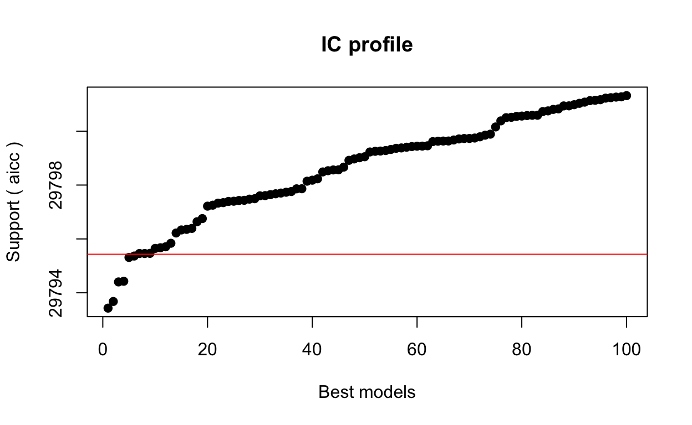

This post as a video (will be added soon)
I recommend to watch a video first, because I highlight things I talk about. It’s less then … minutes long.
Why do we need {glmulti}?
The goal of ANY model is to explain a dependent variable by several independent variables, sometimes called predictors. But which predictors are useful(?) and how many should we include into our model(?), is usually unknown. These questions are important, because if we take to many predictors, we’ll overfit the model and explain the noise in the data instead of uncovering true relationships. While, if we include only a few predictors into our model, we’ll underfit the model and probably miss some potentially important relationships. Thus, we need to find THE BEST model, with an optimal set of predictors which explains maximum of our dependent variable, without explaining the noise.

Stepwise variable selection approach
One of the most common solutions for finding THE BEST model is a stepwise variable selection. But it’s not the best solution out there, and here is why. Stepwise selection applies two main techniques: forwards and backwards selection. But there are two problems with it. First, forwards and backwards approaches would often not converge to the same model, like in our example. And secondly, even if they converge to the same model, this model might not be the optimal one (gray circle on the picture below). These problems occur simply because stepwise selection doesn’t look at all possible models at the same time. They just remove or add terms one by one, compare two models, take the best model of the two, remove or add another term etc..

Load all needed packages at once, to avoid interruptions.
library(car) # extracts model results
library(MASS) # provides "birthwt" dataset
library(ISLR) # provides "Wage" dataset
library(tictoc) # checks running time
library(sjPlot) # visualizes model results
library(glmulti) # finds the BEST model
library(flextable) # beautifies tables
library(tidyverse) # provides a lot of useful stuff !!!
library(performance)# checks and compares quality of models
theme_set(theme_light(base_size = 12)) # beautifies plots
theme_update(panel.grid.minor = element_blank())
# prepare selection
full_model <- glm(mpg ~ (hp + drat + wt + qsec + gear)^2,
data = mtcars, family = gaussian)
null_model <- glm(mpg ~ 1, data = mtcars, family = gaussian)
# run stepwise selection
optimal_model_backward <- step(full_model, direction = "backward",
scope = list(upper = full_model, lower = null_model))
optimal_model_forward <- step(null_model, direction = "forward",
scope = list(upper = full_model, lower = null_model))
# compare two final models
anova(optimal_model_backward, optimal_model_forward, test = "Chisq")
Analysis of Deviance Table
Model 1: mpg ~ hp + drat + wt + qsec + gear + hp:drat + hp:wt + hp:qsec +
hp:gear + drat:wt + drat:qsec + wt:qsec + wt:gear
Model 2: mpg ~ wt + hp + qsec + gear + wt:hp
Resid. Df Resid. Dev Df Deviance Pr(>Chi)
1 18 51.32
2 26 112.06 -8 -60.743 0.00638 **
---
Signif. codes: 0 '***' 0.001 '**' 0.01 '*' 0.05 '.' 0.1 ' ' 1compare_performance(optimal_model_backward, optimal_model_forward)
# Comparison of Model Performance Indices
Name | Model | AIC | AIC weights | BIC | BIC weights | R2 | RMSE | Sigma
------------------------------------------------------------------------------------------------------
optimal_model_backward | glm | 135.927 | 0.989 | 157.913 | 0.203 | 0.954 | 1.266 | 1.689
optimal_model_forward | glm | 144.919 | 0.011 | 155.179 | 0.797 | 0.900 | 1.871 | 2.076“Brute force” approach with {glmulti}
In contrast, {glmulti} R package builds all possible models with all possible combinations of predictors and, optionally, even their pairwise interactions. Such approach was called “brute force”.
{glmulti} then compares the amount of useful information models provide. Such model comparison is done with the help of information criteria (IC), for example Akaike’s IC (aic) or Bayesian IC (bic). Information criteria are used instead of other metrics, such as \(R^2\), because they show the “fitness” of the model, where this fitness is penalized by the number of predictors a model incorporates. In contrast to information criteria, \(R^2\) will always increase with the increasing number of terms and will eventually overfit the model. And as mentioned before, an overfitted model is bad, because it describes the noise rather than genuine relationships between variables. Consequently, we can’t trust the coefficients and p-values of overfitted models.

This picture originates from here
That’s why we need to create all possible models, instead of using stepwise selection, and we need to compare models using Information Criteria, instead of \(R^2\). And while “Brute force” approach is great, the number of models to be considered can easily become exorbitant. However, there are several possibilities to reduce the number of models and to decrease calculation time. Let’s get into the Code and see how to do that.
How to compute glmulti to find the best model
The code is similar to any other model, you use in R:
- first you have the formula with the dependent variable on the left side of the tilde (~), and all possible predictors on the right side of the tilde. For this example we’ll study the salary of 3000 american workers with 5 predictors: jobclass, education, age, health and health-insurance
- then we’ll tell R which dataset to use. In this case we’ll use the “Wage” dataset from ISLR package
- crit specifies the Information Criterion to be used. Default is the Akaike IC (aic). Other options are the Bayesian IC (bic), quasi-AIC for overdispersed or count data (qaic and qaicc) and the small-sample corrected AIC (aicc), which I personally prefer, because for big samples it always gets the same result as Akaike’s IC, while with small samples it performs better
- level - argument is important! It specifies weather all possible models supposed to be build without interactions (level = 1) or with interactions (level = 2)
- argument - method - explores the candidate set of models. Method = “d” counts the number of candidate models without calculating anything. For our example of 5 predictors we’ll have 32 models without interactions and 1921 models with interactions. If method = “h”, an exhaustive screening is undertaken, which means that all possible models will be created. If method = “g”, the genetic algorithm is employed (recommended for large candidate sets)
glmulti(wage ~ jobclass + education + age + health + health_ins,
data = Wage,
crit = aicc, # AICC corrected AIC for small samples
level = 1, # 2 with interactions, 1 without
method = "d", # "d", or "h", or "g"
family = gaussian,
fitfunction = glm, # Type of model (LM, GLM etc.)
confsetsize = 100) # Keep 100 best models
Initialization...
TASK: Diagnostic of candidate set.
Sample size: 3000
4 factor(s).
1 covariate(s).
0 f exclusion(s).
0 c exclusion(s).
0 f:f exclusion(s).
0 c:c exclusion(s).
0 f:c exclusion(s).
Size constraints: min = 0 max = -1
Complexity constraints: min = 0 max = -1
Your candidate set contains 32 models.[1] 32glmulti(wage ~ jobclass + education + age + health + health_ins,
data = Wage,
crit = aicc, # AICC corrected AIC for small samples
level = 2, # 2 with interactions, 1 without
method = "d", # "d", or "h", or "g"
family = gaussian,
fitfunction = glm, # Type of model (LM, GLM, GLMER etc.)
confsetsize = 100) # Keep 100 best models
Initialization...
TASK: Diagnostic of candidate set.
Sample size: 3000
4 factor(s).
1 covariate(s).
0 f exclusion(s).
0 c exclusion(s).
0 f:f exclusion(s).
0 c:c exclusion(s).
0 f:c exclusion(s).
Size constraints: min = 0 max = -1
Complexity constraints: min = 0 max = -1
Your candidate set contains 1921 models.[1] 1921- you then specify the distribution family and the
- fitfunction, where any function similar to lm, glm or glmer can be used
- lastly, confsetsize argument allows you to keep a particular number of the best models, so called - confident set of best models. One hundred - is a default value.
So, now let’s run the exhaustive algorithm and see how much time it takes to compute 1921 regressions and to find the BEST model for our 5 predictors with interactions. “tic()” and “toc()” functions from {tictoc} package would record running time for us.
Fortunately, the exhaustive method took only 19 seconds. Not bad at all, if you ask me. However, I usually have way more then five predictors, which could cause performance problems. That’s why we need to talk about the…
tic()
h_model <- glmulti(wage ~ jobclass + education + age + health + health_ins,
data = Wage,
crit = aicc, # AICC corrected AIC for small samples
level = 2, # 2 with interactions, 1 without
method = "h", # "d", or "h", or "g"
family = gaussian,
fitfunction = glm, # Type of model (LM, GLM, GLMER etc.)
confsetsize = 100) # Keep 100 best models
toc() # 19 sec elapsed: 1921 models
Performance impovement techniques
1. Remove unnecessary terms
And the first one is to remove all unnecessary predictors or interactions. For example a weight and body mass index (BMI) provide very similar information - the statisticians would say - they are highly multicollinear. Anyway, if both, weight and BMI are included, they would dramatically increase the number of models without providing any value. Check this out, adding only two additional categorical predictors (maritl & region) into the Wage model above increases the number of models to over 2.5 millions (2604485 to be exact, see below). And while it’s unimaginable to run so many models in our life time, genetic algorithm provides a solution for it.
glmulti(wage ~ jobclass + education + age + health + health_ins + maritl + region,
data = Wage,
crit = aicc, # AICC corrected AIC for small samples
level = 2, # 2 with interactions, 1 without
method = "d", # "d", or "h", or "g"
family = gaussian,
fitfunction = glm, # Type of model (LM, GLM, GLMER etc.)
confsetsize = 100,
plotty=FALSE)
Initialization...
TASK: Diagnostic of candidate set.
Sample size: 3000
6 factor(s).
1 covariate(s).
0 f exclusion(s).
0 c exclusion(s).
0 f:f exclusion(s).
0 c:c exclusion(s).
0 f:c exclusion(s).
Size constraints: min = 0 max = -1
Complexity constraints: min = 0 max = -1
Your candidate set contains 2604485 models.[1] 26044852. Use genetic algorithm
Particularly, having 6 numeric predictors with interactions, the “brute force” approach needs almost 3 hours, while genetic algorithm runs only 40-80 seconds and produces almost identical results (with sometimes slightly worse IC value).
tic()
test_h <- glmulti(mpg ~ hp + drat + wt + qsec + gear,
data = mtcars,
method = "h", # Exhaustive approach
crit = aic, # AICC corrected AIC for small samples
level = 2, # 2 with interactions, 1 without
family = gaussian,
fitfunction = glm, # Type of model (LM, GLM, GLMER etc.)
confsetsize = 100) # Keep 100 best models
toc() # 32768 models "h" takes 104-109 seconds
# 6 numeric predictors with interactions produces 2.097.152 models, and "h" method takes 9715.466 seconds or ca. 2.7 hours
tic()
test_g <- glmulti(mpg ~ hp + drat + wt + qsec + gear,
data = mtcars,
method = "g", # genetic algorithm approach
crit = aic, # AICC corrected AIC for small samples
level = 2, # 2 with interactions, 1 without
family = gaussian,
fitfunction = glm, # Type of model (LM, GLM, GLMER etc.)
confsetsize = 100) # Keep 100 best models
toc() # 32768 models "g" takes 40-59 seconds
# 6 numeric predictors with interactions produces 2.097.152 models, and "g" method takes 40-80 seconds or ca. 1 minute
So, if genetic algorithm is sooo cool, why not use genetic algorithm all the time? Well, interestingly enough, with categorical predictors, having a lot of categories, genetic algorithms may perform slower as compared to the exhaustive one. For instance, our Wage-model, which has lots of categorical predictors took only 19 second with the exhaustive screening, while needed 117 seconds till genetic algorithm converged, so, almost 6 times longer. Moreover, genetic algorithm might have convergence problem and might run indefinitely long, without you having any idea of WHEN, or IF it ever stops. And lastly, exhaustive method almost always delivers better IC values. That’s why I’d recommend to produce all possible models (aka. using exhaustive screening, aka. applying “brute force” approach) whenever possible and only use genetic algorithm for a high number of numeric predictors.
What the hell is THE BEST model then ???
By the way, remember, in the beginning of the video I said, that stepwise selection is not the best method, implying that {glmulti} approach is better? Well, let’s compare the results of exhaustive and genetic algorithms, to the results of forward and backwards selections and see which is a TRULY BEST model:
optimal_model_glmulti_exhaustive <- test_h@objects[[1]]
optimal_model_glmulti_genetic <- test_g@objects[[1]]
compare_performance(optimal_model_glmulti_exhaustive, optimal_model_glmulti_genetic, optimal_model_backward, optimal_model_forward)
# Comparison of Model Performance Indices
Name | Model | AIC | AIC weights | BIC | BIC weights | R2 | RMSE | Sigma
----------------------------------------------------------------------------------------------------------------
optimal_model_glmulti_exhaustive | glm | 134.734 | 0.391 | 146.460 | 0.496 | 0.932 | 1.547 | 1.750
optimal_model_glmulti_genetic | glm | 134.734 | 0.391 | 146.460 | 0.496 | 0.932 | 1.547 | 1.750
optimal_model_backward | glm | 135.927 | 0.215 | 157.913 | 0.002 | 0.954 | 1.266 | 1.689
optimal_model_forward | glm | 144.919 | 0.002 | 155.179 | 0.006 | 0.900 | 1.871 | 2.076optimal_model_glmulti_exhaustive$formula
mpg ~ 1 + wt + qsec + gear + drat:hp + qsec:wt + gear:wt
<environment: 0x7ff55fa44e80>optimal_model_glmulti_genetic$formula
mpg ~ 1 + wt + qsec + gear + drat:hp + qsec:wt + gear:wt
<environment: 0x7ff539a23e08>optimal_model_backward$formula
mpg ~ hp + drat + wt + qsec + gear + hp:drat + hp:wt + hp:qsec +
hp:gear + drat:wt + drat:qsec + wt:qsec + wt:gearoptimal_model_forward$formula
mpg ~ wt + hp + qsec + gear + wt:hpAs you can see {glmulti} approach produced lower AIC and much lower BIC Information criteria, and interestingly enough, the \(R^2\) produced by {glmulti} is right in between the \(R^2\)s of forwards and backwards selections, suggesting that {glmulti} models are neither underfitted not overfitted. Moreover, in our example both exhaustive and genetic algorithms have identical result (will not always be the case) and showed three interactions (drat:hp + qsec:wt + gear:wt) to be important, while backwards selection found 8 interactions to be important, which to me sound like overfitting, which is in line with it’s highest \(R^2\), and forwards selection found only one interaction, which looks like underfitting, which is in line with it’s lowest \(R^2\).
So, I hope I could convince you that {glmulti} approach is superior to the stepwise selection approach and produces a truly BEST model.
Some exotic applications: GLMER or multinom
And while {glmulti} works fine with the classic functions like LM and GLM, it can also fit some exotic models, such as “multinomial” models via Neural Networks from {nnet} package.
library(nnet)
multinom_glmulti <- glmulti(
education ~ wage + jobclass + health,
data = Wage,
level = 2,
method = "h"
fitfunction = multinom)Here are the predictions of the best multinomial model:
plot(effects::allEffects(multinom_glmulti@objects[[1]]),
lines = list(multiline = T),
confint = list(style = "auto"))

And lastly, despite the fact there is no straightforward fitting function for the mixed-effects models, such as GLMER from {lme4} package, we can easily write our own wrapper-function and use it inside of {glmulti}:
glmer.glmulti<-function(formula, data, random = "", ...){
glmer(paste(deparse(formula),random),
data = data, REML = F, ...)
}
mixed_model <- glmulti(
y = response ~ predictor_1 + predictor_2 + predictor_3,
random = "+(1|random_effect)",
crit = aicc,
data = data,
family = binomial,
method = "h",
fitfunc = glmer.glmulti,
marginality = F,
level = 2 )
Now, let’s have a look at the results of our BEST model and interpret them.
Extract results
The output of a {glmulti} analysis is an object containing the confidence set of models (100 best models by default). Standard R regression functions like “summary()”, “coef()” or “plot()” can all be used to make a multi-model inference. But let’s start with the brief summary of the results which can be obtained with via “print()” command:
print(h_model)
glmulti.analysis
Method: h / Fitting: glm / IC used: aicc
Level: 2 / Marginality: FALSE
From 100 models:
Best IC: 29793.4306133546
Best model:
[1] "wage ~ 1 + jobclass + education + health + health_ins + age + "
[2] " education:jobclass + health_ins:education + education:age + "
[3] " health:age + health_ins:age"
Evidence weight: 0.0786680339413555
Worst IC: 29801.3206286612
6 models within 2 IC units.
74 models to reach 95% of evidence weight.… were we see the most important information, such as fitting function, the information criteria used to rank the models, the formula of the best model and even the number of models which as good as the best model. There are 6 models, which we can also see if we plot our object:
plot(h_model)

This plot shows the IC values for all 100 models from the confidence set. A horizontal line separates 6 best models, that are less than 2 IC units away from THE BEST model. But what predictors and interactions do those 6 models contain? Using {weightable} function, we can easily display them:
weightable(h_model)[1:6,] %>%
regulartable() %>% # beautifying tables
autofit()
model | aicc | weights |
wage ~ 1 + jobclass + education + health + health_ins + age + education:jobclass + health_ins:education + education:age + health:age + health_ins:age | 29,793.43 | 0.07866803 |
wage ~ 1 + jobclass + education + health + health_ins + age + education:jobclass + health_ins:education + education:age + health:age | 29,793.68 | 0.06952606 |
wage ~ 1 + jobclass + education + health_ins + age + education:jobclass + health_ins:education + education:age + health:age | 29,794.40 | 0.04836431 |
wage ~ 1 + jobclass + education + health_ins + age + education:jobclass + health_ins:education + education:age + health:age + health_ins:age | 29,794.43 | 0.04776916 |
wage ~ 1 + jobclass + education + health + health_ins + age + education:jobclass + health_ins:education + jobclass:age + education:age + health:age + health_ins:age | 29,795.31 | 0.03070167 |
wage ~ 1 + jobclass + education + health + health_ins + age + education:jobclass + health_ins:jobclass + health_ins:education + education:age + health:age + health_ins:age | 29,795.36 | 0.02990738 |
Here we see the formulas, Information Criteria and the Akaike weights of our 6 best models. The Akaike weight for a particular model shows the probability that the model is the best model out of all models considered. To say it in a simple lingo - the model with the highest weight minimizes the loss of information. So, while the “best” model has the highest weight, its weight in this example is not substantially larger than that of the second model (and also the third, fourth, and so on). So, we shouldn’t be all too certain here that the top model is really the best model in the set. Several models are almost equally plausible. So, which model should we take then?
If all 6 models are great, but have different combinations of
predictors and interactions, figuring out which terms are important may
help to choose the best model. Fortunately for us, the
plot() command with type="s" argument displays
the relative importance of model terms across all models. The importance
value for a particular predictor or interaction is equal to the sum of
the weights for the models in which the variable appears. So, a
variable that shows up in lots of models with large weights will receive
a high importance value. A vertical line is drawn at 80% (where
terms to the right of the line are part of 80% of the models), which is
sometimes used as a cutoff to differentiate between very important and
less important variables. This threshold is somewhat arbitrary though,
so that we are free to set it at … let’s say 50% and include all the
predictors and interactions with the importance above 50% into the final
model.
plot(h_model, type = "s")

Interestingly, the very first model contains the age:health_ins interaction, which has ca. 50% importance. And it would be totally fine to go with that. But, since we have so many terms with the importance around 80%, I am happy to use only those, including education:health_insurance interaction and predictor health, because they are far enough from the rest. And if I look at 6 best models, I’ll see that the second model has exactly those terms. The third model is a bit worse because it does not contain variable health, but since health is part of the most important interaction - age:health, I’d prefer to include it. So, now we did not blindly trust the algorithm and took it’s BEST MODEL, but examined the results carefully and made a grounded decision to take the second model as OUR BEST MODEL.
Now, we can easily interpret and visualize and check assumptions of OUR BEST model as we always do:
best_model <- h_model@objects[[2]]
car::Anova(best_model)
Analysis of Deviance Table (Type II tests)
Response: wage
LR Chisq Df Pr(>Chisq)
jobclass 4.91 1 0.026764 *
education 626.21 4 < 2.2e-16 ***
health 28.16 1 1.117e-07 ***
health_ins 158.79 1 < 2.2e-16 ***
age 90.94 1 < 2.2e-16 ***
jobclass:education 16.14 4 0.002838 **
education:health_ins 10.22 4 0.036890 *
education:age 12.11 4 0.016572 *
health:age 10.13 1 0.001459 **
---
Signif. codes: 0 '***' 0.001 '**' 0.01 '*' 0.05 '.' 0.1 ' ' 1plot_model(best_model, type = "int") %>%
plot_grid()

And if you want to learn how to test ALL model-assumptions using only one function, check out {performance} package:
Problems
So, while {glmulti} is an amazing package, but it is not perfect and here are three things I found challenging:
rJava package needed. If you can’t easily install rJava package from RStudio, chances are your computed does not have Java installed. Doing this can take some time and nerves.
some arguments are poorly described (e.g. “marginality”), or simply do not work (e.g. “exclude”). Please, let me know in the comments below, if you managed to use “exclude”.
and while the
coef()andpredict()commands are useful multi-model inference tools for models without interactions and only with numeric predictors and could provide multi-model averaged estimates, confidence intervals and predictions, I find them less intuitive for the models with several interactions and with many categorical predictors.
Further readings and references
If you think, I missed something, please comment on it, and I’ll improve this tutorial.
Thank you for learning!